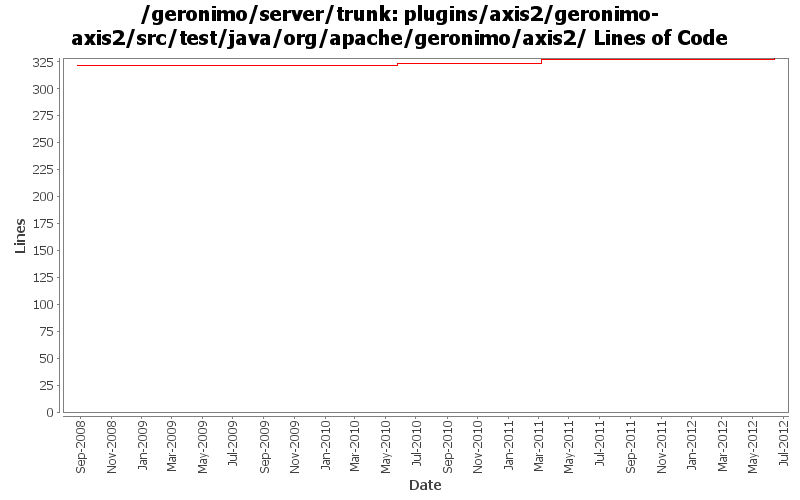

[root]/plugins/axis2/geronimo-axis2/src/test/java/org/apache/geronimo/axis2

| Author | Changes | Lines of Code | Lines per Change |
|---|---|---|---|
| Totals | 11 (100.0%) | 35 (100.0%) | 3.1 |
| xuhaihong | 7 (63.6%) | 35 (100.0%) | 5.0 |
| gawor | 2 (18.2%) | 0 (0.0%) | 0.0 |
| djencks | 2 (18.2%) | 0 (0.0%) | 0.0 |
GERONIMO-6364 jaxws-catalog-tests test failed for UnknownHostExceptiion
Since Geronimo installs the whole ear as one bundle now, there may be issues while reading wsdl and jax-ws-catalog.xml file. Now the solution is that,
for WAR in EAR, as the WAR will be extracted, we will add the module directory prefix for those files, so that bundle.getEntry could work.
for EJB in EAR, the url will be something like ejb.jar!/META-INF/a.wsdl, we will try to build a jar URL to get the resource, one thing that needs to improve is that, this kind of URL will cause a full copy of the target jar file, as JarURLHandler may not recognize the bundleentry protocol.
3 lines of code changed in 1 file:
GERONIMO-6058 Replace StringBuffer usage with StringBuilder
2 lines of code changed in 1 file:
GERONIMO-5990 A JAXWSApplicationContext GBean is added to hold all the available port info in the current web or ejb module
I hope that in the future, we could have a way to avoid create each factory gbean for each web service endpoint, and there will be a method like getWebServiceContainer method in this gbean
2 lines of code changed in 1 file:
1. Enable Axis2 client modules discovery
2. Add GeronimoBundleFinder for runtime JAXB classes discovery
0 lines of code changed in 2 files:
Use BundleListener Axis2ModuleRegistry to configure available Axis2 Modules, while we searched in the classpath in the past
7 lines of code changed in 1 file:
a. remove the use of configurationUrl \n b. Add a BundleAwareReference interface
21 lines of code changed in 1 file:
cf OPENEJB-1252 replace file.toURL() with file.toURI().toURL()
0 lines of code changed in 2 files:
Upgrade to CXF 2.1.x and refactor HandlerResolver code (GERONIMO-4263)
0 lines of code changed in 2 files: